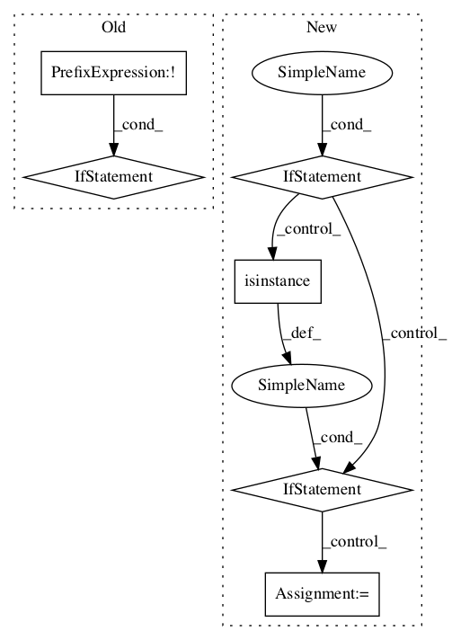

99c14cdf08959bddbe51502cf29f37cb7fdcc9ff,stellargraph/mapper/sequences.py,CorruptedNodeSequence,__init__,#CorruptedNodeSequence#Any#,654

Before Change
def __init__(self, base_generator):
if not isinstance(base_generator, (FullBatchSequence, SparseFullBatchSequence)):
raise TypeError(
f"base_generator: expected FullBatchSequence or SparseFullBatchSequence, "
f"found {type(base_generator).__name__}"
)
self.base_generator = base_generator
self.targets = np.zeros((1, len(base_generator.target_indices), 2))
self.targets[0, :, 0] = 1.0
After Change
self.base_generator = base_generator
if isinstance(base_generator, (FullBatchSequence, SparseFullBatchSequence)):
self.targets = np.tile(
[1.0, 0.0], reps=(1, len(base_generator.target_indices), 1),
)
elif isinstance(base_generator, NodeSequence):
self.targets = np.tile([1.0, 0.0], reps=(base_generator.batch_size, 1))
else:
raise TypeError(
f"base_generator: expected FullBatchSequence, SparseFullBatchSequence, "
f"or NodeSequence, found {type(base_generator).__name__}"
)
def __len__(self):
return len(self.base_generator)
def __getitem__(self, index):
In pattern: SUPERPATTERN
Frequency: 3
Non-data size: 6
Instances
Project Name: stellargraph/stellargraph
Commit Name: 99c14cdf08959bddbe51502cf29f37cb7fdcc9ff
Time:
Author: null
File Name: stellargraph/mapper/sequences.py
Class Name: CorruptedNodeSequence
Method Name: __init__
Project Name: stellargraph/stellargraph
Commit Name: 99c14cdf08959bddbe51502cf29f37cb7fdcc9ff
Time:
Author: null
File Name: stellargraph/layer/deep_graph_infomax.py
Class Name: DeepGraphInfomax
Method Name: __init__
Project Name: asyml/texar
Commit Name: c13faf9996622ddb6297aa090ce0157bcbb5cfe3
Time:
Author: null
File Name: texar/modules/classifiers/conv_classifiers.py
Class Name: Conv1DClassifier
Method Name: __init__